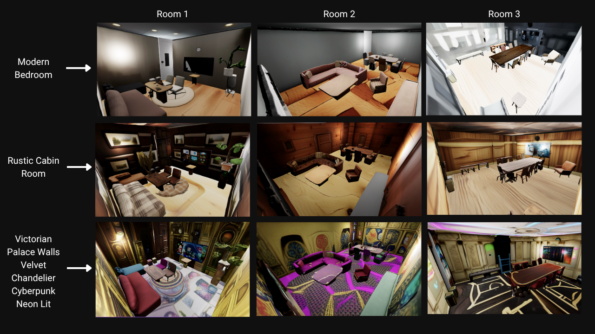
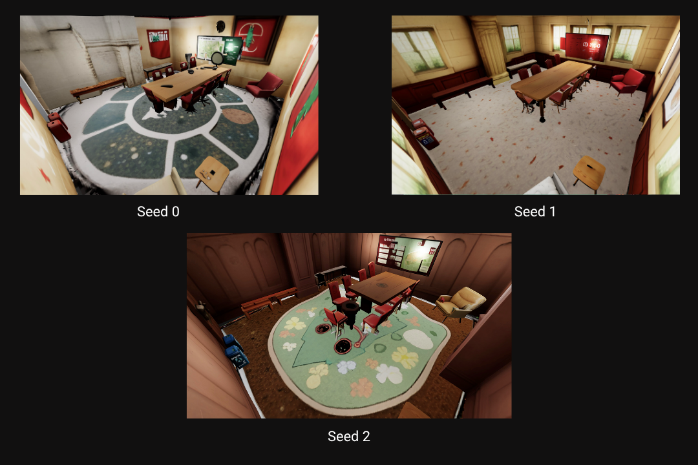
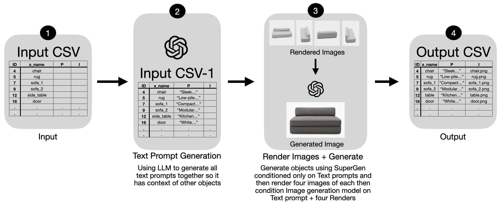

Super Room
Generate thousands of rooms in a single prompt
Designing realistic, editable 3D rooms from text remains difficult when the layout and object identities must stay fixed. SuperRoom generates digital cousins of an existing scene: stylistic and geometric variations that preserve object positions and scales while adapting shapes and materials to match a target prompt (e.g., “modern kitchen”).
Our key idea is to represent the input scene with a superquadric proxy, parametric primitives that capture object extents and poses—then perform text-conditioned retargeting of object appearance (materials, textures) and intra-class shape (e.g., a different chair) under hard constraints from the proxy. This decouples what must not change (layout, affordances, spatial feasibility) from what should change (style and within-class geometry), yielding structure-preserving but visually diverse rooms.
We release code, interface, and evaluation protocols for layout preservation, affordance retention, and edit consistency.
Background: Superquadrics and SpaceControl

SpaceControl is training-free and test-time method that enables spatially controlled 3D asset generation using simple geometric primitives such as superquadrics. This method leverages Microsoft's TRELLIS framework which allows the diffusion process to be guided without additional training. SpaceControl was ideal for this task as it allows structurally faithful and semantically consistent objects.
The τ (tau) factor regulates the trade-off between realism and faithfulness by determining the diffusion step applied to the initial superquadric representation. Increasing τ introduces more noise into the latent representation, producing visually realistic but less constrained outputs, while lower τ preserves geometric accuracy. The rectified flow forward equation is then used to denoise these latents, yielding high-quality 3D structures aligned with text, image, or spatial input cues.
Complex 3D objects can be decomposed into simple geometric primitives such as superquadrics. These are a parametric family of surfaces that can describe cubes, cylinders, spheres, ellipsoids etc in a single continuous parameter space.
Representing a complex object like a chair with superquadrics allows us to represent its shape and apppearance using just 66 parameters instead of thousands typically required for dense meshes or point clouds.

Superquadrics are fully described using 11 parameters: 3 for the position, 3 for the rotation, 3 for the size and 2 for the shape.
Results
Multi Scene Generation
A diverse set of controlled rooms can be generated by varying the superquadric base or the prompt. Each row shows a different prompt being used across multiple room geometries and each column shows different prompt being used across the same room geometry.
No. of Scenes = (No. of rooms) × (No. of seeds) × (No. of prompts).
By combining spatially distinct superquadric configurations with prompt-level variation, the system can produce a number of scenes that remain semantically aligned yet visually diverse:
Controllable Scene Generation
This highlights our method’s ability to generate consistent yet editable indoor scenes. Current state of the art methods for scene generation lack ability to create controllable consistent rooms. After generating the base scene, elements such as the sofa and rug can be selectively repositioned and resized while maintaining overall scene coherence.
Unlike most diffusion based scene generators, SpaceControl produces deterministic outputs which makes it perfect for this task allowing fine-grained control.
Variable Scene Generation
Using the same superquadric base and identical text prompts, our method generates diverse room layouts simply by varying the seed. Each output maintains structural coherence while exhibiting distinct textures, furnishings, and stylistic variations. This demonstrates the model’s ability to balance geometric consistency with creative diversity—producing multiple plausible interpretations of a single scene specification. Such variability enables designers to efficiently explore alternative design options within a consistent spatial framework.
Visualiser
Method
Generation Pipeline

Our pipeline combines several algorithmic stages and targeted engineering choices to improve scalability and realism. Each scene begins with a superquadric room envelope plus a text prompt, and the system can batch through a CSV to process many prompts and rooms.
Generation iterates over each scene objects, replacing each proxy with the generated object. The workflow parallelizes across multiple GPUs to create many rooms at once while allowing per-room modifications. It also runs headless for unattended overnight or remote execution.
Envelope Preprocessing

3D scans often miss exterior wall surfaces when objects occlude them, leaving holes in the room envelope (walls, roof, floor). Diffusion can’t fix broken geometry, so we first make the envelope watertight.
We start from the roof, which is usually the most complete surface. Using RANSAC, we fit a plane, project points to an orthonormal basis, rasterize to a bitmap, splat to close small gaps, and apply binary hole-fill to obtain a watertight 2D mask. We then mesh the mask (ear-clipping), lift it back to 3D, and clean it to get a hole-free roof.
Next, we clone the roof to the floor and connect corresponding boundary edges with triangle-strip extrusion to form the walls. Finally, we have a closed, watertight envelope with no openings.
Prototype Generation
This stage is an engineering choice that boosts quality and consistency. We observed that object shape is largely determined by category/text, not by the image prompt, so we generate geometry first and texture second.
Prototype generation proceeds as follows: use the text prompt to generate the object’s shape (SpaceControl), render a few multi-views, then condition the image generator on text + renders. This aligns the generated textures and details to the actual geometry, producing cleaner, better-mapped results and an output CSV linking each object to its images.
GUI Walkthrough
The GUI walkthrough presents the SuperRoom interface. Enter a text or image prompt and the app generates a room from it. You can adjust lighting, move objects before or after generation, and edit each object’s shape and size. These tools work for any room in the datasets, and you can create new datasets by adding or replacing objects. After generation, a results visualizer lets you inspect the outputs.
Perspectives and next steps
I undertook this project with the Geometric Computation Group, focusing on Computational Geometry and Artificial Intelligence research. I was mentored by postdoc Francis Engelmann and PhD researchers Ian Huang and Elisabetta Fedele. Throughout this project, I was able to learn a great deal from understanding graphics research terminology to implementing complex algorithms and presenting research both within the lab and to the public through posters.
One of the biggest challenges I encountered was balancing deep theoretical understanding with practical implementation. It’s easy to get absorbed in learning a topic thoroughly, but research deadlines often demand forward progress even when your understanding feels incomplete. Over time, I learned that real insight often comes from alternating between exploration and execution.
Looking ahead, I aim to extend this work towards a more mathematical perspective by building interpretable systems that help robots perceive and reason about three-dimensional environments. This remains a fundamental unsolved problem, perhaps best approached by mimicking how humans interpret complex structures through simple primitives. It’s a question I care deeply about, and one I intend to keep pursuing in future research.